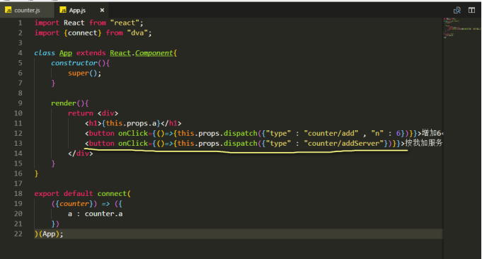

原文连接:https://www.cnblogs.com/rope/p/10741748.html
一、redux-saga解决异步
redux-thunk 和 redux-saga
使用redux它们是必选的，二选一，它们两个都可以很好的实现一些复杂情况下redux，本质都是为了解决异步action而生，使redux保持完整性，不至于太过混乱。redux-saga 是一个用于管理Redux 应用异步操作的中间件。 redux-saga 通过创建 Sagas将所有的异步操作逻辑收集在一个地方集中处理，可以用来代替 redux-thunk 中间件。而且提供了takeLatest/takeEvery可以对事件的仅关注最近事件、关注每一次、事件限频；reudx-saga更方便测试，等等太多了。
npm install --save redux-sagahttps://redux-saga-in-chinese.js.org/
新手教学：
https://redux-saga-in-chinese.js.org/docs/introduction/BeginnerTutorial.html
saga就是拦截action，进行异步请求，转发action，再去reducer进行处理请求
在app根目录创建sagas.js文件，和main.js同级


// ES6的新特性，叫做Generator，产生器
// 是一种可以被调用的时候加next()打断点的特殊函数
export function* helloSaga() {
console.log('Hello Sagas!');
}main.js：
import React from "react";
import ReactDOM from "react-dom";
import { createStore, applyMiddleware} from "redux";
import {Provider} from "react-redux";
import createSagaMiddleware from 'redux-saga';
import App from "./containers/App.js";
import reducer from "./reducers";
//引入sages文件
import { helloSaga } from './sagas.js'
//创建saga中间件
const sagaMiddleware = createSagaMiddleware(helloSaga)
const store = createStore(reducer, applyMiddleware(sagaMiddleware));
//运行
sagaMiddleware.run(helloSaga)
ReactDOM.render(
<Provider store={store}>
<App></App>
</Provider>,
document.getElementById("app")
);
components/counter/index.js写一个按钮：
<button onClick={()=>{this.props.counterActions.addServer()}}>加服务器数据</button>actions/counterActions.js文件中发出一个action叫ADDSERVER，但异步还没发出：
import { ADD, MINUS, ADDSERVER } from "../constants/COUNTER.js";
export const add = () => ({"type" : ADD});
export const minus = () => ({"type" : MINUS});
export const addServer = () => ({"type" : ADDSERVER});
constants/COUNTER.js
export const ADDSERVER = "ADDSERVER" 改变saga.js：saga开始工作，它要开始劫持监听ADDSERVER
import { delay } from 'redux-saga'
import { put, takeEvery , all} from 'redux-saga/effects'
//worker Saga将执行异步的ADDSERVER任务
function* addServerAsync(){
alert("我是工作saga")
}
//watcher Saga
创建了一个 Saga watchAddServer。用了redux-saga提供的辅助函数takeEvery，
用于监听所有的 ADDSERVER action，并在 action 被匹配时执行addServerAsync任务。
function* watchAddServer(){
//takeEvery表示“使用每一个”，当有action的type是ADDSERVER时，就执addServerAsync函数
yield takeEvery('ADDSERVER', addServerAsync);
}
//向外暴露一个默认的rootSaga，有一个设置的监听队列
export default function* rootSaga(){
//创建一系列的监听队列
yield all([watchAddServer()])
}
改变main.js:
import React from "react";
import ReactDOM from "react-dom";
import {createStore , applyMiddleware} from "redux";
import {Provider} from "react-redux";
import logger from "redux-logger";
import createSagaMiddleware from 'redux-saga';
import reducer from "./reducers/index.js";
import App from "./containers/App.js";
//引入sagas文件
import rootSaga from './sagas.js';
//创建saga中间件
const sagaMiddleware = createSagaMiddleware();
const store = createStore(reducer, applyMiddleware(logger, sagaMiddleware));
sagaMiddleware.run(rootSaga);
ReactDOM.render(
<Provider store={store}>
<App></App>
</Provider>
,
document.getElementById("app")
);sagas.js 请求服务器的具体语句，写在worker saga中。
function* addServerAsync() {
//拉取数据
const {result} = yield fetch("/api").then(data=>data.json());
//put就是发出（转发）action，action的type为了避讳，加_SYNC后缀
yield put({ "type": "ADDSERVER_SYNC" , result});
}
reducers/counter.js
export default (state = {"v" : 0} , action) => {
if(action.type == "ADD"){
...
}else if(action.type == "MINUS"){
...
}else if(action.type == "ADDSERVER_SYNC"){
return {
"v": state.v + action.result
}
}
return state;
}saga就是拦截action，进行异步请求，转发action，再去reducer进行处理请求
删除actions、constants文件夹，然后给reducers/counter.js的type都加上引号！
改counter/index.js，不用bindActionCreators了，直接发出action。
import React from 'react';
import {connect} from "react-redux";
class Counter extends React.Component {
constructor(props) {
super(props);
}
render() {
return (
<div>
<h1>Counter : {this.props.v}</h1>
<button onClick={()=>{this.props.add()}}>增加</button>
<button onClick={()=>{this.props.minus()}}>减少</button>
<button onClick={()=>{this.props.addServer()}}>加服务器数据</button>
</div>
);
}
}
export default connect(
({counter}) => ({
v : counter.v
}),
(dispatch) => ({
add(){
dispatch({"type" : "ADD"});
},
minus() {
dispatch({"type": "MINUS" });
},
addServer() {
dispatch({"type": "ADDSERVER" });
}
})
)(Counter);加入pie图表组件
components/pie/index.js组件，记得在App.js引入组件
import React from 'react';
import {connect} from "react-redux";
class Pie extends React.Component {
constructor(props) {
super(props);
//请求数据
props.loadServerData();
}
//组件已经上树
componentDidMount(){
//echarts是引入的百度的包提供的全局变量
this.pic = echarts.init(this.refs.pic);
}
componentWillUpdate(nextProps){
var option = {
...
};
//设置option组件就能显示了！
this.pic.setOption(option);
}
render() {
return (
<div>
<h1>我是pie组件！</h1>
<div ref="pic" style={{"width":"300px" ,"height":"300px"}}></div>
<button onClick={()=>{this.props.toupiao('a')}}>清晰</button>
<button onClick={()=>{this.props.toupiao('b')}}>一般</button>
<button onClick={()=>{this.props.toupiao('c')}}>懵逼</button>
</div>
);
}
}
export default connect(
({pie})=>({
result: pie.result
}),
(dispatch)=>({
loadServerData(){
dispatch({ "type": "LOADSERVERDATA"})
},
toupiao(zimu){
dispatch({ "type": "TOUPIAO" , zimu})
}
})
)(Pie);
reducers/pie.js，在reducers/index.js中引入
export default (state = {"result" : []} , action) => {
if (action.type == "LOADSERVERDATA_SYNC"){
return {
...state ,
result : action.result
}
}
return state;
}
sagas.js
import { delay } from 'redux-saga';
import { put, takeEvery , all} from 'redux-saga/effects';
//worker Saga
function* addServer() {
//拉取数据，转发action
const {result} = yield fetch("/api").then(data=>data.json());
yield put({ "type": "ADDSERVER_SYNC" , result});
}
function* loadServerData() {
const {result} = yield fetch("/api2").then(data=>data.json());
yield put({ "type": "LOADSERVERDATA_SYNC", result });
}
function* toupiao(action) {
const {result} = yield fetch("/toupiao/" + action.zimu).then(data=>data.json());
yield put({ "type": "LOADSERVERDATA_SYNC", result });
}
// watcher Saga
function* watchAddServer() {
yield takeEvery('ADDSERVER', addServer);
}
function* watchLoadServerData() {
yield takeEvery('LOADSERVERDATA', loadServerData);
}
function* watchToupiao() {
yield takeEvery('TOUPIAO', toupiao);
}
//向外暴露一个默认的rootSaga，有一个all设置的监听队列
export default function* rootSaga(){
//创建一系列的监听队列
yield all([watchAddServer(), watchLoadServerData() , watchToupiao()])
}二、Dva简介和配置
2.1 Dva简介
文档：https://github.com/dvajs/dva/blob/master/README_zh-CN.md
React繁文缛节很多，为什么？
因为React将注意力放到了组件开发上，可以用class App extends React.Component类，它就是一个组件了，可以被任意插拔，<App></App>。
可被预测状态容器Redux感觉在React“之外”，不“浑然一体”。
比如要配置Redux：
……
var {createStore} from "redux";
……
const store = createStore(reducer);
……
<Provider store={store}>
<App></App>
</Provider>
组件中：
connect()(App);
如果要使用异步，更感觉是在React“之外”，不“浑然一体”。
……
var {createStore} from "redux";
……
const store = createStore(reducer , applyMiddleware(saga));
run(rootSaga);
……
<Provider store={store}>
<App></App>
</Provider>
这是因为React将注意力放到了组件开发上。
Vue框架要比React好很多，浑然一体方面简直无敌。
Vue天生带有Vuex，天生就可以有可被预测状态容器，有异步解决的方案。
阿里巴巴的云谦，发明了dvajs这个库，“集大成”者，本质的目的就是让程序“浑然一体”，一方面是方便起步，更大的发明利于团队组件开发，不用频繁在组件文件actions、saga、reducers文件之间进行切换了。
2.2 Hello World
npm install --save dvadva中集成了redux、react-redux、redux-saga、react-router-redux，所以我们的项目装dva之前，要去掉这4个依赖。
注意：现在的package.js文件没有以上这些依赖：
{
"name": "react_study",
"version": "1.0.0",
"description": "",
"main": "index.js",
"scripts": {
"test": "echo \"Error: no test specified\" && exit 1"
},
"author": "",
"license": "ISC",
"devDependencies": {
"babel-core": "^6.26.3",
"babel-loader": "^7.1.5",
"babel-plugin-transform-object-rest-spread": "^6.26.0",
"babel-plugin-transform-runtime": "^6.23.0",
"babel-preset-env": "^1.7.0",
"babel-preset-react": "^6.24.1"
},
"dependencies": {
"dva": "^2.4.0",
"express": "^4.16.3",
"react": "^16.4.2",
"react-dom": "^16.4.2",
"redux-logger": "^3.0.6"
}
}后端app.js提供静态化路由：
var express = require("express");
var app = express();
app.use(express.static("www"))
app.get("/api",(req,res)=>{
res.json({"result":10})
})
app.listen(3000);
main.js
import dva from 'dva';
//引入路由
import router from './router.js';
//创建app应用
const app = dva();
//注册视图，创建路由
app.router(router)
//启动应用 上树运行
app.start('#app');
router.js是路由，单页面应用的hash路由，router.js文件暂时不写任何路由功能，只返回一个标签。
import React from 'react';
export default ()=>{
return <h1>我是dva</h1>
}2.3使用组件
组件没有任何的简化，还是原来的写法：
components/App.js
import React from 'react'
export default class App extends React.Component {
constructor(){
super()
}
render() {
return <div>
<h1>我是App组件</h1>
</div>
}
}
在router.js（路由文件）引入App组件，表示一上来就挂载App组件：
import React from 'react';
import App from './components/App';
export default ()=>{
return <App></App>
}2.4使用redux，创建model，组件要问天要数据
这里非常大的改变，照着Vuex改的
注意：不是创建reducers文件夹，而是创建models文件夹，创建counter.js
export default {
"namespace":"counter", //命名空间
"state":{
a : 100
}
}
内部，dva会自动将counter作为一个reducer的名字，进行combineReducers
main.js
import React from 'react';
import dva from 'dva';
// 引入路由
import router from './router.js';
import counter from './model/counter.js';
//创建app
const app = dva();
//创建路由
app.router(router)
//创建并使用全局数据
app.model(counter)
//上树运行
app.start('#app');组件没有任何变化，只不过connect要从dva中引包。
2.5改变天上数据
dispatch()没有改变
model文件counter.js创建一个属性叫reducers，里面放一个add函数，依然是纯函数，不能改变state，只能返回新的state。
export default {
"namespace" : "counter",
"state" : {
"a" : 100
},
"reducers" : {
add(state,action){
return {
"a" : state.a + action.n
}
}
}
}
2.6异步
改变model中counter.js文件，刚才已经有了reducers函数，那里是写同步的函数。
现在要创建一个effects函数，这里写异步的函数，很像vuex！！
export default {
"namespace" : "counter" ,
"state" : {
"a" : 100
},
"reducers" : {
//这里写同步函数
add(state , action){
return { "a": state.a + action.n}
}
},
"effects" : {
//这里写异步函数
*addServer(action , {put}){
const {result} = yield fetch("/api").then(data=>data.json());
//异步终点一定是某个同步函数，所以put重新触发某个reducers中的同步函数
//带着载荷参数，去改变state的数据
yield put({"type" : "add" , "n" : result})
}
}
}组件的按钮没有变化：

2.7使用logger插件
import React from 'react';
import dva from 'dva';
import logger from 'redux-logger';
//引入路由
import router from './router.js';
import counter from './models/counter.js';
// 创建app
const app = dva({ onAction: logger});
//创建路由
app.router(router);
//创建并使用模型
app.model(counter);
//上树运行
app.start("#app");三、React路由
3.1概述
每个公司用的路由都不一样，这里不一样是很不一样。
dva中依赖react-router-redux，没有改变任何语法
但是react-router-redux出了5代版本，它的2、4、5都特别不一样。
参考文章：
2代：http://www.ruanyifeng.com/blog/2016/05/react_router.html?utm_source=tool.lu
5代：https://blog.csdn.net/isaisai/article/details/78086913
还可以不用官方这个路由，用UI-Router
更可以不用单页面路由，用服务器后端的路由
我们介绍的是单页面的，dva2.3中的react-router-redux 5代的路由写法。
3.2基本使用
react-router-redux是单层级路由，路由的描述，没有任何嵌套
直接路由到最内层组件。
main.js
import React from 'react';
import dva from 'dva';
import logger from 'redux-logger';
// 引入路由
import router from './router.js';
//创建app
const app = dva({ onAction: logger});
//创建路由
app.router(router)
//创建并使用数据模型
app.model(counter)
//上树运行
app.start('#app');
app/router.js路由文件：
import React from 'react';
import { Router, Switch, Route } from 'dva/router';
import Index from "./components/index.js";
import CarList from "./components/carlist/index.js";
import UserList from "./components/userlist/index.js";
export default ({ history, app }) => {
return <Router history={history}>
<Switch>
<Route exact path="/" component={Index} />
<Route exact path="/carlist" component={CarList} />
<Route exact path="/userlist" component={UserList} />
</Switch>
</Router>
}这个路由是一个被动的写法：子组件声明我被谁嵌套，而不是父组件声明我嵌套谁。
最内层组件，比如CarList组件，写法：
import React from 'react';
import {connect} from "dva";
import App from "../../containers/App.js";
export default class CarList extends React.Component {
constructor(props) {
super(props);
}
render() {
return (
<App menu="汽车">
<div>
<h1>我是Carlist组件</h1>
</div>
</App>
);
}
}
App.js
import React from 'react';
import { connect } from 'dva';
import { Layout, Menu, Breadcrumb, Icon } from 'antd';
import { push } from 'react-router-redux';
const { SubMenu } = Menu;
const { Header, Content, Sider } = Layout;
class App extends React.Component {
constructor() {
super()
}
render() {
return <div>
<Layout>
<Header className="header">
<div className="logo" />
<Menu
theme="dark"
mode="horizontal"
defaultSelectedKeys={[this.props.menu]}
style={{ lineHeight: '64px' }}
onClick={(e) => { this.props.dispatch(push(e.item.props.url))}}
>
<Menu.Item key="首页" url="/">首页</Menu.Item>
<Menu.Item key="汽车" url="/carlist">汽车</Menu.Item>
<Menu.Item key="用户" url="/userlist">用户</Menu.Item>
</Menu>
</Header>
<Layout>
<Layout style={{ padding: '0 24px 24px' }}>
<Breadcrumb style={{ margin: '16px 0' }}>
<Breadcrumb.Item>Home</Breadcrumb.Item>
<Breadcrumb.Item>List</Breadcrumb.Item>
<Breadcrumb.Item>App</Breadcrumb.Item>
</Breadcrumb>
<Content style={{ background: '#fff', padding: 24, margin: 0, minHeight: 280 }}>
{this.props.children}
</Content>
</Layout>
</Layout>
</Layout>,
</div>
}
}
export default connect()(App);路由跳转：
onClick={(e)=>{this.props.dispatch(push(e.item.props.url))}}